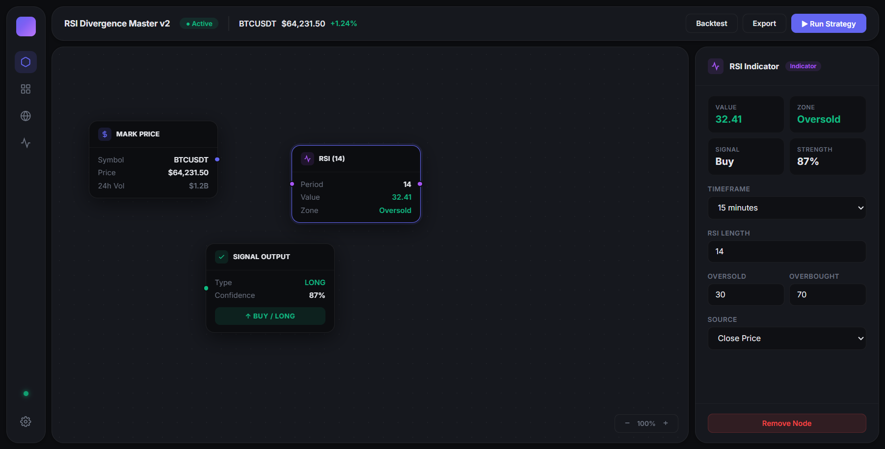
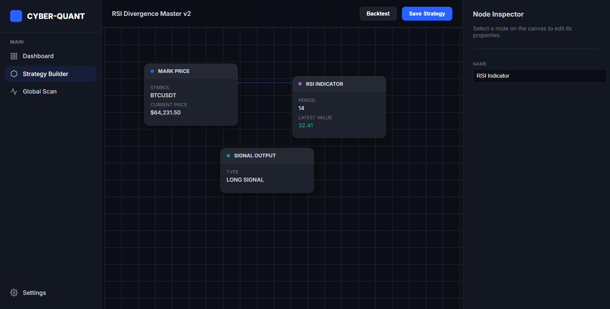

Connect blocks on an infinite canvas — indicators, Smart Money Concepts, order-flow and AI risk filters. Backtest, optimize, and deploy automated bots.
34 strategy nodes · multi-exchange (CCXT) · backtester · genetic optimizer
Everything in one canvas
A full trading pipeline built visually — no scripts, no lock-in.
Binance, Bybit, OKX, MEXC, Kraken via CCXT. Candles, order-book, funding, scanners.
RSI, MACD, Bollinger, ATR, EMA, Stochastic, divergence and multi-timeframe filtering.
Fair Value Gaps, Order Blocks, BOS/CHoCH, liquidity sweeps, Daily Bias & Killzones.
Time-series forecasting plus an LLM that returns PASS/BLOCK with a confidence score.
Full backtester with equity curve, Sharpe, profit factor — and a genetic optimizer.
Compile any strategy to a standalone Python bot in Docker. Manage a fleet, Panic Stop.
See it in action
Drag nodes, wire your logic, and tune every parameter in the inspector — live.


Three steps
Drag nodes onto the canvas and wire your logic. Or import a TradingView PineScript and get a node graph automatically.
Run it on historical data, read the performance report, let the genetic optimizer find the best parameters.
Paper-trade first, then deploy as an automated bot with Telegram alerts and server-side risk controls.
Free & self-hostable
Clone the repo and run one command with Docker. Start with paper trading and built-in templates — no API keys needed.